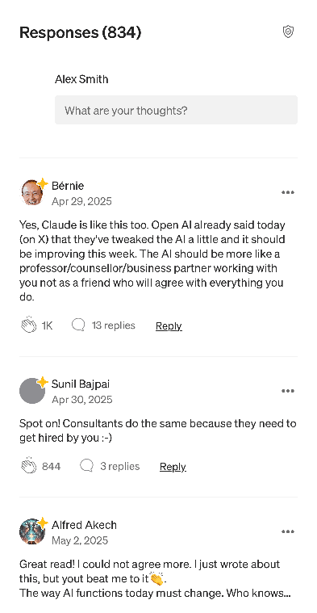
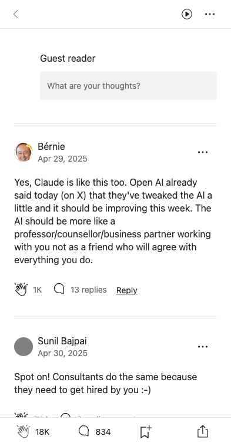

Reference: 1179×2556 normalized to393×852, OS top59/bottom34 cropped. Implementation: actual393×759 browser capture. Cropping does not establish device DPR. Article footer headings aligned; active browser header differs from collapsed reference header. Font, icons, inaccessible source content and mock menu behavior remain different; no100%claim.
Home/Story detail / 02_sc_332d5b0923e546fcbf6a8fc613cda6a4
Home/Story detail/Saving a story / 02_sc_31edfd53d2874259a6ed5ecbc756d10b
Home/Story detail / 05_sc_e1a92b59829c4678b3362d2dc6abae59


Home/Story detail / 07_sc_92624aea551d44a7bbcf71d7d78aff4c